Bài học 28: làm được nhiều việc hơn với bảng xoay
Bài học 28: Làm được nhiều việc hơn với PivotTable
/en/excel/intro-to-pivottables/content/
Giới thiệu
Như bạn đã học trong bài học trước của chúng tôi, PivotTable có thể được sử dụng để tóm tắt và phân tích hầu hết mọi loại dữ liệu. Để thao tác với PivotTable—và hiểu rõ hơn nữa về dữ liệu của bạn—Excel cung cấp ba công cụ bổ sung:bộ lọc,slicersvàPivotCharts.
Xem video bên dưới để tìm hiểu thêm về cách nâng cao PivotTable.
Bộ lọc
Đôi khi bạn có thể muốn tập trung vào một phần dữ liệu nhất định của mình.Bộ lọccó thể được sử dụng đểthu hẹpdữ liệu trong PivotTable để bạn chỉ có thể xem thông tin mình cần.
Để thêm bộ lọc:
Trong ví dụ bên dưới, chúng tôi sẽ lọc ranhân viên bán hàngnhất định để xác định doanh số bán hàng riêng lẻ của họ tác động như thế nào đến từng khu vực.
- Kéo một trường từDanh sách trườngvào khu vựcBộ lọc. Trong ví dụ này, chúng tôi sẽ sử dụng trườngNhân viên bán hàng.
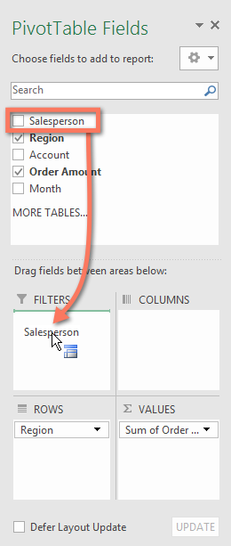
2. bộ lọcsẽ xuất hiện phía trên PivotTable. Nhấp vàomũi tên thả xuống, sau đó chọn hộp bên cạnhChọn nhiều mục.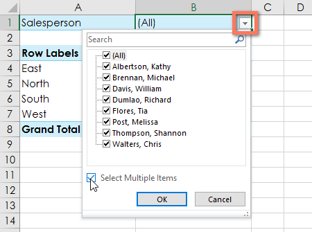
3. Bỏ chọnhộp bên cạnh bất kỳ mục nào bạn không muốn đưa vào PivotTable. Trong ví dụ của chúng tôi, chúng tôi sẽ bỏ chọn các hộp dành cho một số nhân viên bán hàng, sau đó nhấp vàoOK.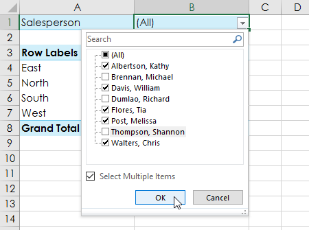
4. PivotTable sẽđiều chỉnhđể phản ánh những thay đổi.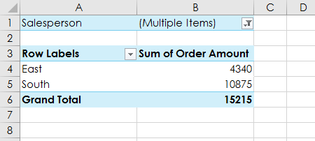
Máy thái
Bộ cắtgiúp việc lọc dữ liệu trong PivotTable trở nên dễ dàng hơn nữa. Bộ cắt về cơ bản chỉ làbộ lọcnhưng sử dụng dễ dàng hơn và nhanh hơn, cho phép bạn xoay vòng dữ liệu của mình ngay lập tức. Nếu bạn thường xuyên lọc PivotTable của mình, bạn có thể cân nhắc sử dụng bộ cắt thay vì bộ lọc.
Để thêm một slicer:
- Chọnbất kỳ ô nàotrong PivotTable.
- Từ tabAnalyze, hãy nhấp vào lệnhInsert Slicer.
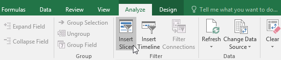
3. Một hộp thoại sẽ xuất hiện. Đánh dấu vào ô bên cạnhtrườngmong muốn. Trong ví dụ của chúng tôi, chúng tôi sẽ chọnNhân viên bán hàng, sau đó nhấp vàoOK.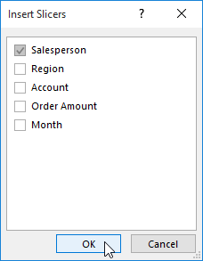
4. Bộ cắt sẽ xuất hiện bên cạnh PivotTable. Mỗi mục đã chọn sẽ được đánh dấu bằngmàu xanh. Trong ví dụ bên dưới, bộ cắt chứa tất cả tám nhân viên bán hàng, nhưng hiện chỉnămtrong số họ được chọn.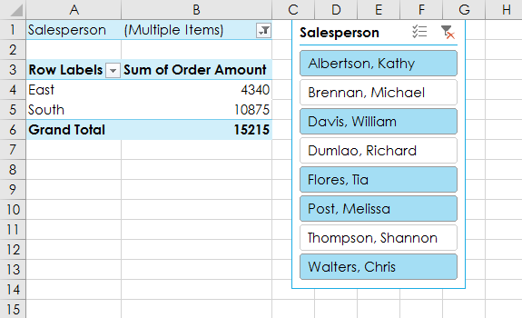
5. Cũng giống như các bộ lọc, chỉ các mụcđã chọnmới được sử dụng trong PivotTable. Khi bạnchọnhoặcbỏ chọnmột mục, PivotTable sẽ ngay lập tức phản ánh sự thay đổi. Hãy thử chọn các mục khác nhau để xem chúng ảnh hưởng như thế nào đến PivotTable. Nhấn và giữ phímCtrltrên bàn phím để chọnnhiềumục cùng một lúc.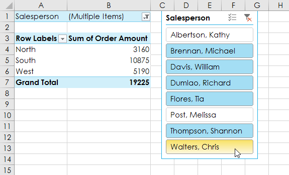
Bạn cũng có thể nhấp vàobiểu tượng Bộ lọcở góc trên bên phải của bộ cắt để chọntất cảmục cùng một lúc.
Biểu đồ Pivot
PivotChartsgiống như các biểu đồ thông thường, ngoại trừ việc chúng hiển thị dữ liệu từPivotTable. Giống như các biểu đồ thông thường, bạn sẽ có thể chọnloại biểu đồ,bố cụcvàkiểusẽ thể hiện dữ liệu tốt nhất.
Để tạo PivotChart:
Trong ví dụ bên dưới, PivotTable của chúng tôi hiển thị một phầnsố liệu bán hàngcủa từng khu vực. Chúng tôi sẽ sử dụng PivotChart để có thể xem thông tin rõ ràng hơn.
- Chọnbất kỳ ô nàotrong PivotTable của bạn.
- Từ tabChèn, hãy nhấp vào lệnhPivotChart.
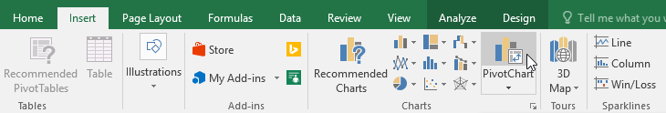
3. Hộp thoạiChèn biểu đồsẽ xuất hiện. Chọnloại biểu đồvàbố cụcmong muốn, sau đó nhấp vàoOK.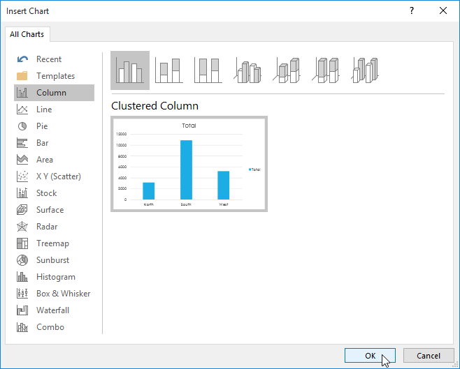
4. PivotChart sẽ xuất hiện.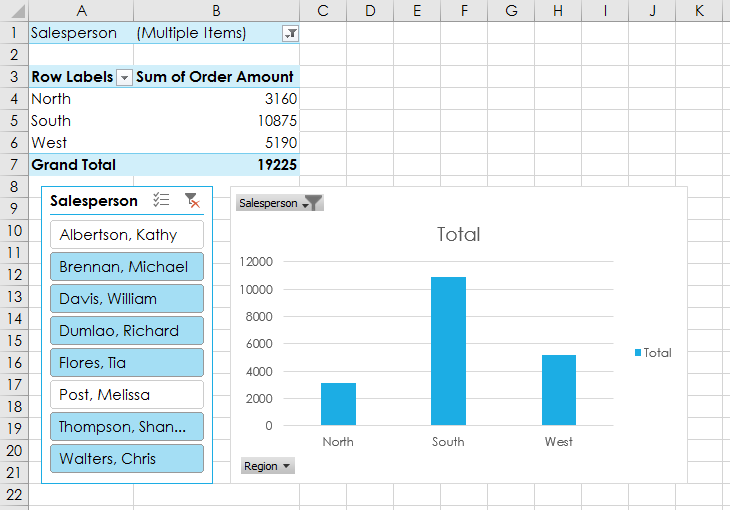
Hãy thử sử dụngbộ lọchoặcbộ cắtđể thu hẹp dữ liệu trong PivotChart của bạn. Để xem các tập hợp thông tin con khác nhau, hãy thay đổicộthoặchàngtrong PivotTable của bạn. Trong ví dụ bên dưới, chúng tôi đã thay đổi PivotTable để xemdoanh số hàng thángcủa mỗi nhân viên bán hàng.
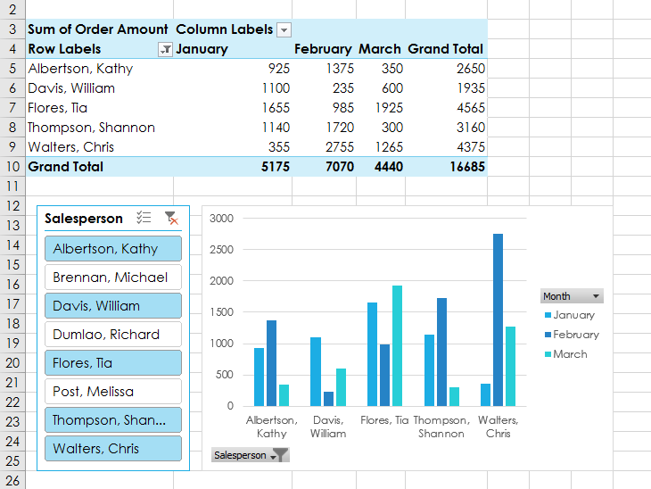
Thử thách!
- Mở sổ làm việc thực hành của chúng tôi.
- Trong khu vựcHàng, hãy xóaVùngvà thay thế bằngNhân viên bán hàng.
- ChènPivotChartvà chọn loạiDòng có điểm đánh dấu.
- ChènslicerchoVùng.
- Sử dụngslicerđể chỉ hiển thị các vùngNamvàĐông.
- Thay đổi loạiPivotChartthànhCột xếp chồng.
- Trong khungTrường PivotChartở bên phải, hãy thêmThángvào khu vựcChú giải (Chuỗi).Lưu ý: Bạn cũng có thể bấm vào PivotTable và thêmThángvào khu vựcCộtđể có kết quả tương tự.
- Khi bạn hoàn tất, sổ làm việc của bạn sẽ trông giống như thế này:

/en/excel/whatif-analysis/content/